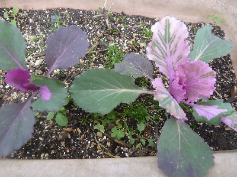
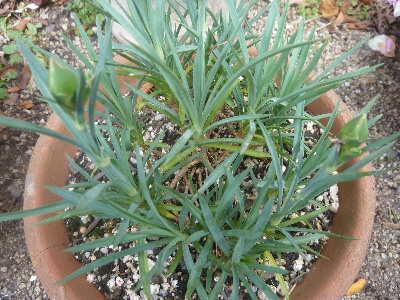
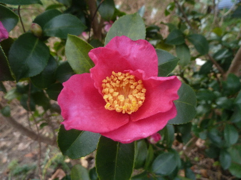
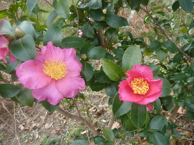

遊びで植物を育てよう
2017/12/24
葉ボタンはまだ小さいです。
もうすぐお正月ですが、まだ小さいです。

これは小さいまま終わっちゃうのかな。
小さくても春には花が咲くんだろうか。
【ページTOP】 【12月TOP】
【園芸TOP】
2017/12/17
雪が降りました。
雪が降りました。うっすら雪化粧です。

午前中は雪がありましたが、午後には溶けました。
今日は最高気温が4度だったみたいです。
寒かったな。
【ページTOP】 【12月TOP】
【園芸TOP】
2017/12/03
カーネーションに蕾が出来ていました。
いつ咲くんでしょうね。

春までこのままの状態でもつのかな。
咲かずに終わっちゃうのかな。
【ページTOP】 【12月TOP】
【園芸TOP】
2017/12/03
サザンカは咲き始めがいいですよね。

発色もよくて綺麗です。

すこし経つと、色があせてきますよね。
椿みたいに落ちちゃうといいのにな。
【ページTOP】 【12月TOP】
【園芸TOP】
過去の日記
【2016年12月の日記】
【2015年12月の日記】
【2014年12月の日記】
【2013年12月の日記】
【ページTOP】
【12月TOP】
【園芸TOP】
畑仕事じゃないよ。
【おいしいものを食べよう。】【たくさん寝よう。】
【ソロ活をしよう!】【季節感のあることをしよう。】【動画視聴はほどほどに。】【当サイトの全てのコンテンツは無断転載禁止です。】